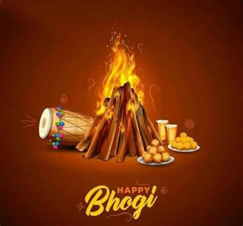
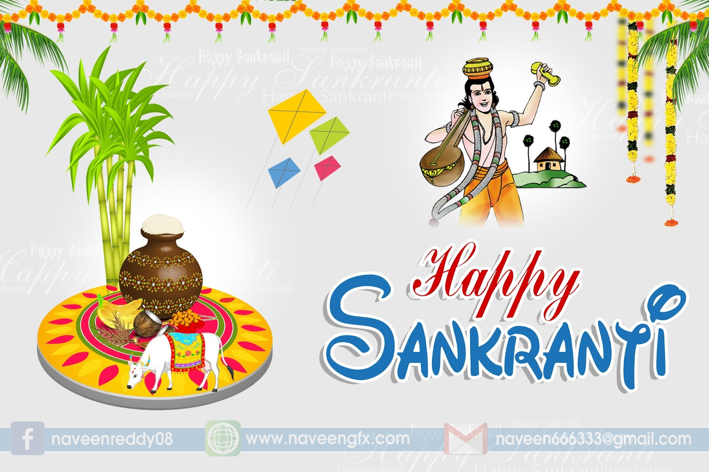
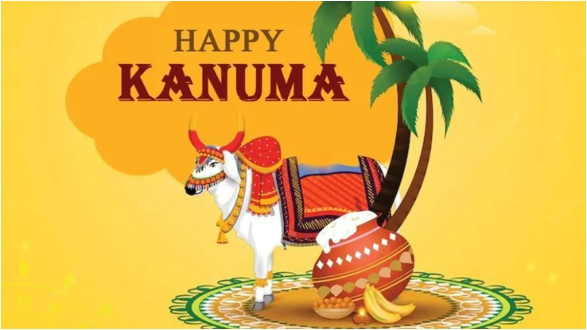
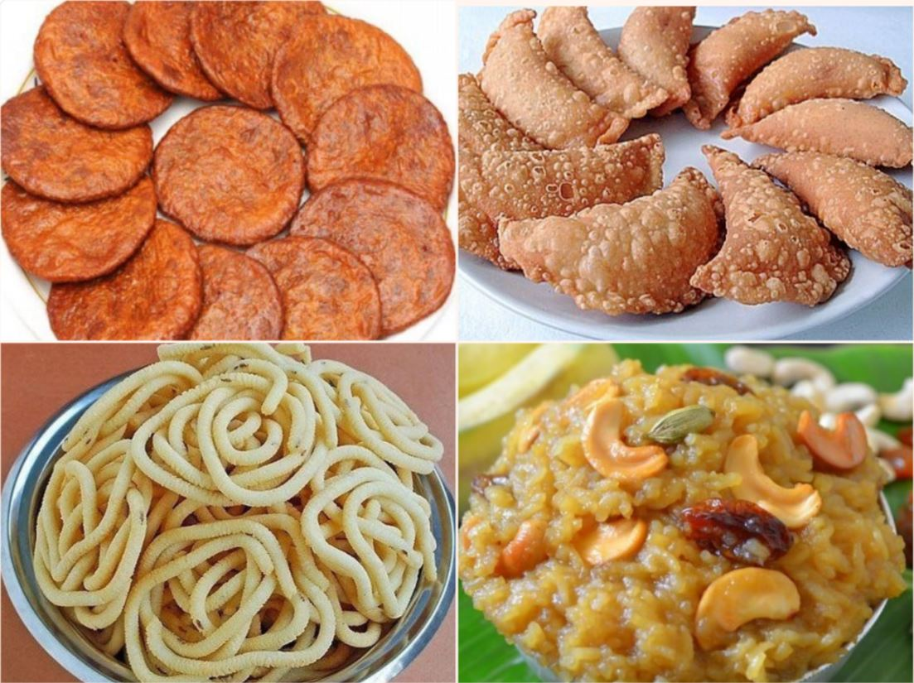

Sankranti is a popular harvest festival celebrated in India, especially in Andhra Pradesh and Telangana. It marks the transition of the sun into the zodiac sign Capricorn.
Sankranti is celebrated for four days: Bhogi, Makara Sankranti, Kanuma, and Mukkanuma.
On Bhogi, people clean their houses and light a bonfire to discard old items.
Makara Sankranti is the main festival day when families wear new clothes and prepare traditional sweets.
Kanuma is dedicated to farmers and cattle. Special prayers are offered on this day.
Sankranti special foods include Pongal, Ariselu, Bobbatlu, and sugarcane.
Kite flying is a fun activity enjoyed by children and adults during Sankranti.